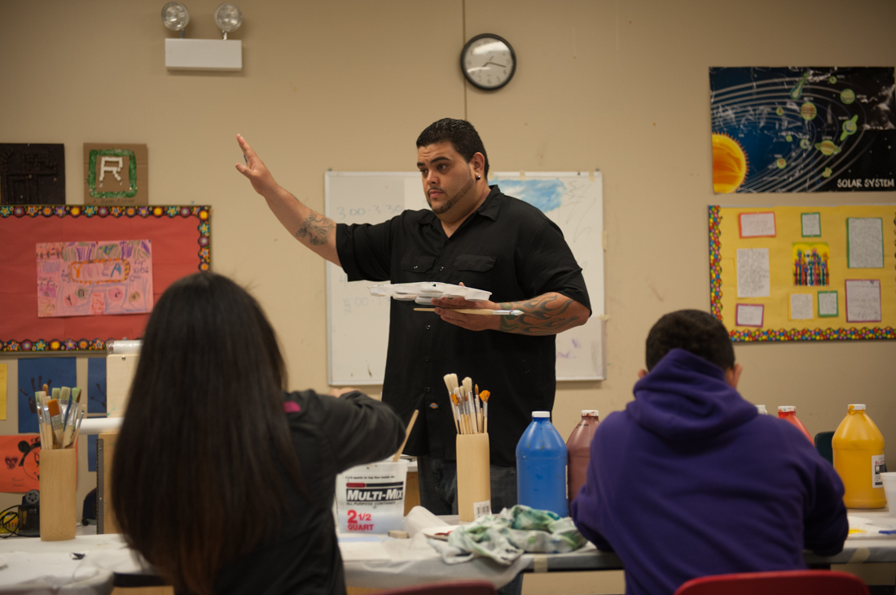
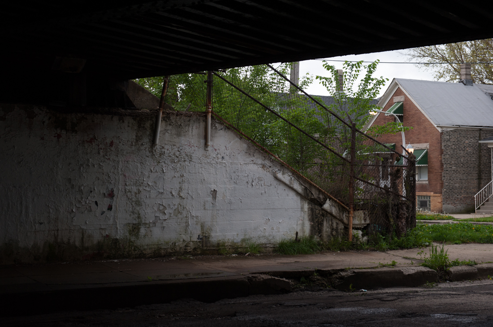
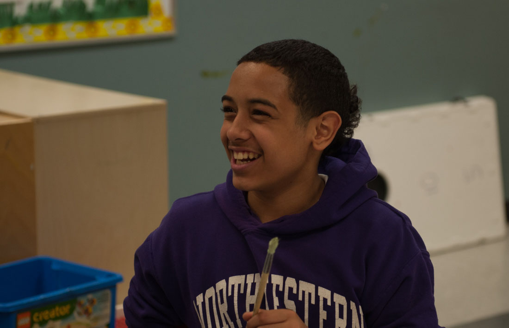

Citadels of Hope: YMCA outreach workers in Chicago
There are two maps of Chicago. The one most of us see shows streets and neighborhoods. The other is an invisible web of gang territories that cover much of the city. For many youth in Chicago, it's only the second one that matters.
Mike Almore was out getting ice cream when he got the call.
A youth in the YMCA's Youth Safety and Violence Prevention program (YSVP) was in trouble. Fernando needed to get his passport from the post office which meant venturing into a rival gang's territory.
He'd covered up his facial tattoo, which could give him away as an opposition gang member, with a Band-Aid. Even still, he had seen teenagers he didn't know come out of a gangway, look at him and then disappear. Fernando was certain they were going to get more guys or a gun.
(Photo illustration)
He hoped Mike could get him out of the neighborhood before the boys returned.
Reported and written by: Adriana Cargill
Produced by: Kate Morrissey
Citadels of Hope: YMCA outreach workers in Chicago
There are two maps of Chicago. The one most of us see shows streets and neighborhoods. The other is an invisible web of gang territories that cover much of the city. For many youth in Chicago, it's only the second one that matters.
Mike Almore was out getting ice cream when he got the call.
A youth in the YMCA's Youth Safety and Violence Prevention Program (YSVP) was in trouble. Fernando needed to get his passport from the post office which meant venturing into a rival gang's territory.
He'd covered up his facial tattoo, which could give him away as an opposition gang member, with a Band-Aid. Even still, he had seen teenagers he didn't know come out of a gangway, look at him and then disappear. Fernando was certain they were going to get more guys or a gun.
He hoped Mike could get him out of the neighborhood before the boys returned.
Youth Safety and Violence Prevention Outreach Workers
This is not a job for the faint of heart. Mike Almore, John Vergara and Bobby Acuna are three outreach workers who wake up every day to work with youth who live and struggle to survive in violent communities. Community violence is often thought of as gang violence, but it also includes: sexual violence, domestic abuse, bullying, shootings in public places or anything that creates "warlike" conditions and psychological trauma.
In 2011, Chicago had an estimated 100,000 gang members in more than 70 gangs, making the Windy City the most gang-infested city in the country according to the Chicago Crime Commission's Gang Book released in 2012. The Chicago Police Department recovered an average of more than 13,000 guns a year in 2006, 2007, 2008, more than New York and Los Angeles combined for those same years, according to the same report. In 2012, Chicago had the highest murder rate in the nation, and has been in the top three cities with the most homicides since 1985, according to Pew Research Center.
The YMCA's Youth Safety and Violence Prevention Program, YSVP, headquartered in Pilsen, uses a holistic approach to violence prevention. The YSVP team believes that youth who are repeatedly exposed to traumatic stress are at risk for developing coping mechanisms like drug use, self-harm and gang involvement. They work with boys and girls ages 12-18 who come from low-income households predominantly from Chicago's South and West sides.
YSVP offices at 21st Place and South Ashland Avenue in Pilsen where a holistic approach to violence prevention is practiced. (Adriana Cargill/Medill)
The YSVP has a staff of 21, along with an army of interns and veterans who carry out this mission. The different programs use a combination of peace circles, mentoring, parent teen cafes, art and sports programing to reach the youth.
What makes Almore, Vergara and Acuna able to positively impact the youth they work with is complicated. To do it successfully, they need to be not only dedicated and intuitive, but also resilient in the face of adversity. Youth expressed overwhelmingly how important it is to them that they can relate with these mentors. They're from the same or similar neighborhoods as the kids they work with. They have an intimate and often personal understanding of the challenges these youths face. They've struggled with many of the same challenges: being born to poor families, going to poor schools, living in very poor communities, where many of their friends overdose, are murdered, join gangs or go to prison. Women in these communities often have children at a very young age, continuing the cycle.
The YSVP Co-Executive Director Eddie Bocanegra says that sometimes people just lose hope.
"I think my best staff members here are the people who have suffered the most," Bocanegra says. "The question I have is what did they do with that suffering? That's where they've found much of their resiliency; in their own suffering. In the midst of those ashes they have come out of all that hardship to do this type of work."
Bocanegra believes that Almore, Vergara and Acuna embody a deep sense of hope. It's not just about relating and empathizing with these youth; it's their extraordinary resilience and drive in the face of adversity. Rather than drag the sins of their former lives like a ball and chain, they have chosen to take those same traumas and use them as weights to strengthen the communities they work in. They are citadels of hope.
Before the suspicious boys could return, Mike picked up Fernando and brought him back to the YMCA. The building has tinted windows so people passing by on the street can't see whose inside. It's doors are locked 24/7. This is a safe haven where youth from many different gangs can come and the YSVP has worked very hard to maintain that neutrality in the eyes of the gangs.
Mike says in the past, he has been in similar situations where he's had to run for his life. At other times, he's had to negotiate with gang leaders to release his youth or call in a favor with his contacts in the gang world. This is just an everyday part of the job for these outreach workers.
Later that day, he drove Fernando home safely.
At the YSVP headquarters, if you ask for Mike no one will know who you are talking about. If you ask for "Big Mike" they will direct you to Mike Almore. (Adriana Cargill/Medill)
Mike Almore
Mike Almore watches them toss the worn football back and forth across the Queen of Heaven Cemetery grounds. It's just outside of Chicago, and it's hot for a late spring morning. There's a cool breeze rolling in with a hint of rain on its tail. Mike sees a crowd gathering around one of the many graves. He walks over to find Danny staring down at the grave; his eyes tracing the lettering of his own first and last name. The man buried here is his father, who died of an overdose on Dec 29, 2011 when Danny was just 13 years old. That was four years ago and Danny hasn't been back to the cemetery since.
Jaime's a close family member of Danny and he comes over to look at the grave. Danny, Jaime and the group of boys with them are part of the Urban Warriors program. It's a program under YSVP that pairs post-9/11 veterans with youth who have already been exposed to the kind of violence that most people only see in wartime photos. According to the Co-Executive Director Eddie Bocanegra, it's the only program in the country where youth and veterans come together to focus on the impact of trauma.
The boys continued to play football in the cemetery as if they weren't there. And maybe that's because in their everyday lives they're closer to this place than they want to admit. Almost all the teenagers in Urban Warriors know a close friend or family member who is already under the ground.
A crowd gathered around Danny's father's grave. From left to right: Social Worker Edwin Martinez (with glasses), Jaime (black shirt with blue jeans) Danny (gray shirt), Co-Executive Director Eddie Bocanegra (maroon shirt), and Mike Almore (navy blue shirt). (Adriana Cargill/Medill)
"We're trying to do some tertiary intervention, some prevention," Mike says. "I just wanna catch them before they get to the cemetery."
Mike has been an outreach worker at the YSVP for just under a year, but before that he worked in a graveyard for about seven years. He quickly became desensitized to death, preferring not to know anything about the people he was burying until the day came when he buried someone and nobody came to the burial ceremony. Nobody came in the following days or weeks either to bring flowers or visit the grave.
"I felt real bad, we die alone as it is; but to be forgotten or neglected, to have nobody give a f--- about you," Mike said, "is terrible."
Mike Almore at the barbecue after the graveyard trip singing along to classic House music hits from his youth. (Adriana Cargill/Medill)
So he started counting the people he buried; about six to seven bodies a day, five days a week for almost seven years. He also tried to find out something about their lives.
Mike's experiences working in a graveyard didn't kill his sense of humor. He cracks jokes all the time. He'd return home from work at the cemetery and his girlfriend would ask "how was work today?" "Dead" he would reply or "people are dying to get in where I work!" Even though he liked how peaceful it was working there, he felt like he was meant to do something else. While still at the graveyard he began mentoring Jaime.
Mike, 42, lives in the six-flat apartment building in Pilsen where he was born and raised. His family owns the building and he remembers when Jaime and his mom moved into one of the apartments. He described him as a nerdy kid with thick black rimmed glasses and disheveled thick black hair in need of a cut. Kids in the neighborhood used to bully him. His older brother joined a gang and later overdosed. Little by little, Jaime started hanging out with a rough crowd. Mike tried to warn him, telling him about his own experiences in a gang and his brother Caid Almore's story.
Mike Almore can't sit on his steps without people stopping and chatting with him. Pictured here with his father, Almore is well-known in his native Pilsen neighborhood. (Adriana Cargill/Medill)
Mike describes Caid as a "hardcore gangbanger" who lived "hard" and had a reputation for bravado. For the three years before his murder, the family slept on pins and needles. When they would hear a siren or an ambulance go by in the middle of the night, they'd wake up thinking "is that Caid?" and if it slowed down Mike would get out of bed to see if it was him. Then one day in 2004 the phone call came. It was five in the morning and Mike just let the phone ring. His girlfriend urged him to pick it up saying it "might be important."
He told her he already knew who it was. After the phone stopped ringing he listened to the voice mail; it was his older brother Brooks Dino Almore telling him to call him immediately.
"Hello?" said Dino.
"How is he?" said Mike.
"He's dead," Dino said. Mike dropped the phone and started crying.
And the worst part was their mother didn't know yet. Mike asked himself, "How do you tell your mother her son's dead?" Caid had been found shot to death in between two cars in the street a few blocks from their house. Dino and Mike went over to their mother's apartment to deliver the heartbreaking news.
"When I heard my mom howl like that, it was from the gut... I never want to hear anybody's mom cry like that again, nobody's mom should have to cry like the way my mom cried for her son."
Sitting at a bus stop, Mike Almore looks down on the spot in the street where his brother Caid Almore was murdered around eight years ago. (Adriana Cargill/Medill)
Mike says preventing other mothers from going through what his mom did is a large part of why he works as an outreach worker. Another part of him also feels guilty for Caid's death. He thinks he and his older brother, Dino, set a bad example by both joining gangs. Caid was a little brother following in his big brother's footsteps.
Mike joined a gang when was about 13 years old. Five years later, he was standing watch at about 1 in the morning on Racine Avenue. He was leaning on a stop sign when he heard a shot ring out and then a "ping!" as the bullet hit the pole. Mike says he actually saw another bullet come past his head and hit the pole and then ricochet the other way. He dropped to the ground and after the shooting stopped he got up and wiped himself off. Back on his feet he was shaking, thinking to himself: "that could have been it."
At 6 feet 3 inches and 250 pounds, Mike was a large target leaning on a thin pole. He believes to this day that it was divine intervention that saved his life. God was trying to tell him he was meant to do more than live the street life. That night he made up his mind to leave the gang. It's a common practice that if you quit a gang you get what's called a 'violation.' In Mike's case, he could have chosen among shooting someone, paying a large sum of money or being beaten by everyone in the gang without being allowed to defend himself. He chose the beating. Because he was a loyal gang member, it only lasted 2 minutes. Often, beatings last the length of time it takes for a cigarette to burn down - which can be eternity.
Mike Almore, at age18. He has been an outreach worker at the YSVP for just under a year, but before that he worked in a graveyard for about seven years. Photo courtesy Mike Almore.
"At this age, he took those stories as something he wanted to experience himself. And that's part of the danger of actually sharing some of these stories with the youth," Mike said with a sigh. Outreach workers often share their personal stories to relate with their youth and teach them what not to do. But despite Mike's discouragement, Jaime has joined a gang. Youth join gangs for many different and often complex reasons, making it hard to determine what 'turns' them (as it's called when someone joins a gang), Mike says.
Jaime's mother, was so upset she used to walk the streets late at night looking for him. Mike has since persuaded her to stop by telling her it's dangerous to be on the streets that late and that she won't find him. Even worse, she might see something she shouldn't, which could endanger her and Jaime.
Now she stays home.
Mike sometimes gets calls late at night from parents of youth in the program who can't find their kids. Sometimes the youth themselves will call and ask him to pick them up if it's an emergency. For Mike, this work is redemption for his own past. He took a pay cut to be able to work with kids full-time.
"I'm mostly doing it because I have a lot of regrets from back then and if I could save someone, one kid not to have some of these regrets, then I'll die happy."
Until kids in 8 to 10 years come back and tell him that they've made the right choices because of him, he will continue to think he hasn't done enough, he says. Mike used to go where his brother was murdered and read to him every year on his birthday. But recently he has stopped going. He says if he keeps going to that place then Caid's spirit will keep coming back there too, and Mike wants him to be free.
Danny, Mike Almore and Jaime walk to meet the group after a scavenger hunt in the graveyard to find different types of graves. (Adriana Cargill/Medill)
Amid the tombstones the mood of the group has become palpably more somber. The football is nowhere to be found. The boys' faces are sullen and they're nervously shifting back and forth, avoiding eye contact with the veterans and outreach workers. The group is reflecting on how they cope with grief and loss. They've also been asked to think about how they want to be remembered when they die. It starts to sprinkle big drops of rain that burst when they hit the graves. Eddie says the way he copes with his grief and honors those he has lost is by working with youth.
Some 45 percent of homicides in Chicago are related to gang altercations or narcotics according to a University of Chicago Crime Lab report. In the report, 90 percent of all homicide offenders and nearly three-quarters of homicide victims have prior arrest records suggesting involvement with gangs, drugs or other illegal activities. Mike got Jaime into the Urban Warrior program but now his mother says she's sending him to live with her sister in Florida for a month or two. Now that Jaime's in a gang, his chances of suffering the same fate as Caid Almore have increased considerably.
Bobby Acuna getting ready for Victory Outreach City Church's Sunday service. (Adriana Cargill/Medill)
Bobby Acuna
Bobby Acuna's hands are folded in prayer. His face is freshly shaven, peaceful and calm as Pastor Steve Drapala recites a prayer before the service begins. He and the other three ministers are nestled between a set of lockers in the long hallway of Richard T. Crane Medical Preparatory High School on Chicago's Near West Side. Victory Outreach International is an Evangelical Pentecostal church that holds a Sunday service here every week. Bobby's eyes are closed and his bald head is tilted downwards. Under the fluorescent light you can plainly see the giant old English letters spelling 'I E' tattooed on the back of his head. The 'I E' or "Inland Empire" refers to San Bernardino County in Southern California where he was a gang member for 29 years.
When the prayer is over, the ministers jump into action and split in different directions to take their places. Bobby walks briskly into the vast gymnasium and as he turns the corner an explosion of singing and light erupt from the ad hoc church. In between the basketball hoops, there are rows of folding chairs, a stage with royal blue satin backdrop and a translucent pulpit. Men and women onstage are singing "Healer, Savior risen from the grave your name is Jesus." The song blasts out of a massive sound system in the back of the room.
Victory Outreach evangelizes to the world's prostitutes, convicts, drug addicts and gang members. The church tries to help those whom many in society has given up on. Bobby feels at home here, surrounded by people with similar pasts. At the end of the service the evangelist will infuse members of the congregation with the Holy Spirit and send them unconscious and convulsing to the floor.
Left to right: Bobby Acuna, a visiting evangelist from Ghana, Pastor Steve Drapala and Alex Martinez. (Adriana Cargill/Medill)
For the moment, Bobby takes his place in the front and immediately raises his hands and begins to sing. He's dressed sharply in a black suit with a paisley maroon tie and shiny leather shoes. Shortly after the service begins, Daniel Rios sits down next to Bobby. At 15 years old, he's a pinch taller than his mentor but his rosy cheeks give him away as a teenager.
Before Daniel met Bobby he said his mentors were gang members in the streets. He says his dad isn't really there for him because he drinks a lot and is always with his friends. Daniel was referred to the YMCA by his school because of behavioral issues. When Daniel first met Bobby, he didn't know what to make of him.
"He was telling me he was a man of God, but it was kind of confusing when he had all those tattoos on him," Daniel said. "I never seen a man with so many tattoos at a church."
Daniel is from Little Village and, at 14, he had never been downtown; he hadn't even left his neighborhood. To do that, he would have had to cross into rival gang territory. Although Daniel has never been in a gang, he knew he would be unprotected if he ventured into neighborhoods where the gangs didn't know him. At 15 years old, he took his first trip downtown in the YSVP van. He went to Navy Pier, rode the Ferris wheel and went into the house of mirrors. He says it was "pretty fun."
Daniel volunteers at church helping with security because it makes him feel more a part of the community. Bobby encourages him, and he's always there if Daniel needs him. Daniel says he never used to think about the future, but since Bobby became part of his life he sees himself being a leader and wants to be the CEO of a company someday.
Bobby Acuna standing next to Daniel and singing during Victory Outreach's Sunday service. (Adriana Cargill/Medill)
Co-Executive Director Eddie Bocanegra says that more than 200 people applied for Bobby's position. But Bobby was by far the most impressive. He's been at the YMCA since September 2014. Eddie says he's an "all-star" and that some of the kids who have already completed the program continue to seek Bobby out as their mentor long after they have graduated. Eddie says what Bobby lacks in formal education (he doesn't have high school degree), he makes up for with his unique set of skills. He's able to help youth navigate through the challenges they face such as gangs life, substance abuse, domestic violence, or street violence better than any Ph.D. could ever do, Eddie says.
At 48 years old, Bobby's life now is in stark contrast to the story of his past he tells. When he was in fourth grade, he says his mother's brother, Alberto Rodriguez, tried to kill his father, Jesus Cruz Acuna, to stop him from beating Bobby's mother. One night, Rodriguez shot his father twice in the back and left him for dead. But Bobby's dad got up and instead of going to the hospital, he went to the bar, Bobby says. That night, Bobby slept in the church parking lot with his mom and six siblings. The next morning they moved to Barstow, California, where he says he grew up angry and fatherless.
At 10 he joined a gang. At 15, he says he was sentenced to a year in the Optimist Home For Boys in Los Angeles for the first time. The charge was inciting mayhem after he and a few friends drunkenly beat and repeatedly stabbed another youth. They chose their victim at random; Bobby had just gotten his first switchblade knife that day, and he was eager to use it.
Bobby Acuna at 35 years old in Soledad State Prison in California with his mother Cecilia Hernandez. Photo courtesy Bobby Acuna.
When Bobby was young, he didn't have a positive mentor like Daniel has now. Instead, he looked up to his uncle, David Rodriguez, a gang member who taught him the ways of the streets. At 23, he says all he knew was how to gangbang. He lived a life of drugs, women and violence; but he was still angry and bitter. He was miserable and blamed his uncle David for making him that way. By 2004, he was on the High Desert's Most Wanted list by the California Department of Corrections.
Bobby's transformative moment came in Chino State Prison when he was 39 years old. Bobby describes the moment this way:
Bobby and a fellow inmate were sent to a two-man cell after fighting in the mess hall. He and the other inmate were friends but from different gangs. In that cellblock, the guards pass by every hour. As soon as the guards passed, it became clear to Bobby that his cellmate was going to attack him.
The whole tier of the cellblock knew what was about to happen and as was customary they began to sing 'happy birthday' really loud to cover up any screams for help during the fight. The assault was no surprise to Bobby, who had known tensions were boiling up against him within the gang world.
The assault was fast and brutal. When the guards came by an hour later the cell was covered in blood and Bobby had his assailant pinned to the ground. After the guards took them both from the cell, Bobby was sent back with a mop and bucket to clean the blood off the walls and floors.
It was a dark time in his in life; he had become disillusioned with the gang life and power struggles within the gang world left him unable to trust his friends or even his wife. He realized if he had killed his assailant, he would've spent life in prison for murder, even though he was just defending himself; surviving. He felt so frustrated and alone.
It was in this moment that Bobby decided he'd had enough.
Bobby Acuna is working in his office at the YSVP headquarters in Pilsen. The 'RIP Miklo' painting behind him was made by some of his youth whose friend Miklo was recently killed. (Adriana Cargill/Medill)
After he was released from prison in 2007, he knew he couldn't just start life over after 29 years in the gang. He needed help. So he decided to spend a year at Victory Outreach's Christian Recovery Home in Helendale, California. It's a men's rehabilitative center where they attend services and study the Bible every day. He accepted Jesus Christ as his personal Savior and decided to devote his life to spreading the word of God.
Pastor Rick Alanis recognized Bobby's passion for their church and expertise with gang members as assets for the church's expansion in Chicago. It's extremely difficult and often dangerous for an outsider to come into a gang's territory and gain permission from the gang's leaders to work with neighborhood youth. But Bobby did it. Bobby arrived in Little Village in September 2011 intending to stay only three months. He's been here over three years now, and he says he just couldn't desert the youth he met.
After a while Eddie began to hear about a guy from California who'd moved to Little Village and was preaching to gang members in the neighbhorhood. Eventually, they met, and Eddie spent a few years watching Bobby's devotion to helping youth. "When I spoke to him, I could sense that there was conviction," Eddie said. "There was atonement."
Bobby was engaged to be married in California but delayed the wedding because he felt he had found his calling to work with youth. Almost four years passed before he got married in May 2015. After their wedding, his wife moved to Chicago. Bobby lives for his youth. He makes himself available 24 hours a day seven days a week for them. Bobby doesn't hide from his past, nor does he wear it as a badge of honor.
Bobby Acuna began working with Daniel when he was hired at the YSVP in September 2014. Acuna has continued to mentor Daniel even after he graduated the program. (Adriana Cargill/Medill)
Sometimes he thinks about his own eight children; all but his 16-year-old son Adrian Acuna are adults now. When he spends time with the YSVP youth he wonders what it would have been like to be there for them in the way he is for the youth he works with now. In those days, he was in prison or on the corner instead of being with them. Today, Daniel goes to Church with Bobby and Adrian every week.
Daniel says Bobby has brought hope to his life. He and his brother joined the church and now they're bringing their friends to the YMCA. When asked what lesson Daniel has learned from Bobby, he replied without hesitation: You're never alone.
John Vergara, who has Puerto Rican roots, in front of a mural of his "Paseo Boricua" flag for Humboldt Park. Each town in Puerto Rico has it's own flag and in 2009 Vergara decided to create one for his neighborhood. The flag is very popular in the community and can be seen flying everywhere. (Adriana Cargill/Medill)
John Vergara
John Vergara wakes up thinking about art. He goes to sleep thinking about art. On Tuesday and Thursday evenings he runs an art class for youth in YSVP and today the teens are running about an hour late.
Three boys arrive earlier than the rest and they help him get the classroom ready by grabbing paints and brushes from the storage cabinet. They're antsy and impatient, endlessly munching on chips and snacks John keeps stocked in his office. Jashua, a 14-year-old with big, warm eyes and a smile that will surely break some hearts, wears a Bulls hat cocked up and a purple Northwestern University hoodie with a silver chain poking out. When the other kids arrive you can hear them halfway down the hall, bursting with energy. They're eight-graders in their final weeks of middle school. But when John talks, they listen.
 John Vergara teaches the kids how to paint a waterfall using new brush techniques. (Adriana Cargill/Medill)
John, 42, is a big man, about 6'4" and 300 pounds, with tattoos covering most of his chest, stomach, back, arms and neck. Most of his tattoos are relics of his 20-something years in a gang in his native Humboldt Park neighborhood. He used to have tear drops on his face and lettering on his knuckles. But he's begun to remove them because he says they no longer represent who he is.
At about 9 years old, he witnessed his first murder. He describes the moment like this: It was a warm evening, maybe 8 o'clock, and he, a friend and a cousin around his age were walking past the intersection of Le Moyne Street and Lawndale Avenue. He saw an older, tall, skinny white boy whose nickname was Stoner.
"Hey, Stoner, be careful," John called out. Stoner had on Chuck Taylor's with pink and black laces, the colors of his gang. But he was in opposition territory. John lingered a moment and watched Stoner walk away from him underneath the train bridge. Suddenly he heard shots ring out; and saw the silhouette of someone standing on top of the bridge. This particular stretch of railroad tracks was infamous in the 1980s. It was known as "Sniper's highway" because of the number of shootings that occurred there.
John saw Stoner drop to the ground and he ran over with his companions. One of them tried to turn Stoner on his side, but as he did his jaw fell off into the growing pool of blood, John recalls. John didn't get close to him, he felt sick to his stomach.
John says he's sure it messed him up a little but "Death was just a part of life. What's that phrase? You live by the sword, you die by the sword," he says.
 The exact spot under the train bridge near Le Moyne Street and Lawndale Avenue where Stoner was murdered. (Adriana Cargill/Medill)
Almost everyone John knew growing up was in a gang. At 14, he had already used a TEC-9 semi-automatic submachine gun and was a full-fledged gang member. He says his gang used to have guys with guns on the roofs of buildings protecting their territory while other gang members sold drugs like cocaine, marijuana or wikisticks (joints dipped in embalming fluid). He's been shot four times, and one of those bullets is still in his right wrist, wedged just underneath his skin.
John ended up in and out of prison for most of his life but, through it all John still created art. "Drawing kept me alive, that's how I survived in there [jail] and that's how I survived out here."
When he was released in 2005, he was still in the gang. It didn't happen in a single moment but a gradual realization had been taking hold over months and years. He didn't want to spend more time in prison. He was sick of sleeping with one eye open. He was sick of looking over his shoulder wherever he went and living his life around gang borders. He had a son and he wanted to raise him right, so he didn't the same mistakes his dad had made. And he didn't want to see any more death. John had had enough tragedy and pain.
He decided to quit the gang. He had to isolate himself from almost everyone he had ever known at 32 years old.
John Vergara at 26 years old celebrates at new year's party in 2000. Photo courtesy John Vergara.
He says it was tough for him to get a job because of his criminal record and his gang tattoos. He began selling his drawings to make ends meet. Through sheer determination, little by little he started making more money with his art and creating a new life for himself. John takes pride that around the neighborhood, instead of being known as "John the ex-gang member" he's known as "John the artist."
Today, John has a book of obituaries, with 78 names in total, of friends and family he's lost. Most of them have been killed to gang violence. The book's full, but he couldn't bear to start another one so just stopped collecting obituaries. His nails are chewed way past the tips of his fingers, halfway up their beds. It's one clue as to how heavy all this death weighs on him.
He's now a well-known muralist and a familiar artist in the galleries around the city. Eddie Bocanegra first saw John's artwork at Northeastern University when he was taking an evening class. Eddie was immediately struck by John's talent. A security guard at the university put them in touch. The two stayed in contact and when a position opened, Eddie hired him at the YSVP in October 2014.
John's main objective as an outreach worker is mentoring and case management but Eddie says they're fortunate to be able to leverage his set of art skills to engage their kids more creatively.
John has since started an art program at the McCormick Tribune YMCA in Logan Square. He spends a lot of time with the kids making art but in the process he tries to teach them life skills and prevent them for making the same mistakes he did. When John talks they listen.
 Jashua smiles and jokes with friends during art class at the McCormick Tribune YMCA in Logan Square. (Adriana Cargill/Medill)
"He tells us to do better, like when we're driving he shows us like some kids that be standing on the corner; I don't want to come out like all those other people," Jashua says. "Why would I want to risk my life for something dumb?"
Many of the kids John works with are from the same neighborhood where he grew up and now face many of the challenges he did—violence, substance abuse and poverty. Jashua hangs out on the same block, Maplewood and Division streets, that John did when he was in a gang. But he's mostly there because his best friend, who is also in John's art class, lives there. He wants to go to college and become a chef or a lawyer. Kids in his program say they can relate to John because he was once in their shoes and they trust his advice because he's already lived the gang life.
Jashua says he used to hang out with the wrong crowd when he was younger. At about 8 years old, he witnessed his first murder—about the same age as John was.
He knew that crowd through his cousin, who is now in prison. He says he doesn't want to end up in jail because he heard the food is bad, which would be tough on any aspiring chef.
John Vergara points out a bullet that is still lodged in his wrist. (Adriana Cargill/Medill)
"Most of the time he's there, sometimes he's, like, busy with the YMCA stuff, he don't pick up but he'll text. Or call back," Jashua says. Jashua's father isn't in his life. "I've never had a role model in my life so...he is one," he says squirming in his chair and blushing with a big smile.
John says the kids in his art program know there are consequences to their decisions, and some of them are going to have to learn from their own mistakes like he did. But if he can help it, they won't make the same mistakes he did.
"It makes me feel good, it's hard to explain. It's like, that's what was missing from my life working it kids... . I get to teach them right and wrong." John says. "I get to mentor these kids and watch them grow and it's a lot of fun."
John says he finally found his life's calling: helping people and doing art. But he often goes home from work feeling drained and exhausted. It's not because he's physically working hard, but because sometimes hearing the kids' stories is really hard for him.
"Yeah, I take it home with me because a lot of things that they say, I've been through and it's like damn; it kind of hits home. I remember going through that, seeing my mother being abused, my friend get shot, etc." It's a constant reminder of his past.
John Vergara in his office at the McCormick Tribune YMCA getting organized for the next days work. (Adriana Cargill/Medill)
To cope, he often gets a coffee by himself or listens to music in an effort to clear his mind. But most of the time he just gets out his sketchbook and draws or paints.
As he erases the gang art tattooed to his body, he says it's starting to make him a little sad. He's afraid the memories that these tattoos represent will fade with them. But he is coming to peace with that.